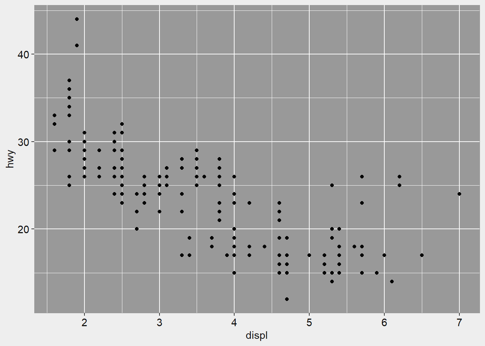
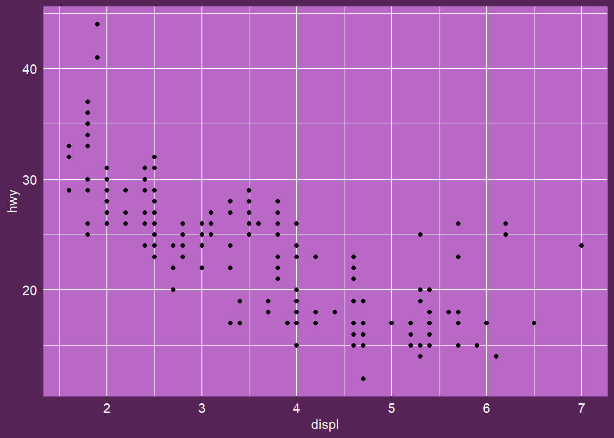

Tutorial part 3: Colour palettes in slumdown
by Danielle Navarro, 19 Apr 2019
The slum theme for Hugo allows some degree of flexibility in visual styling, which is really nice when blogging. Most of the time I want my blog to use a consistent palette, but then there are occasions where I might want a single page to use a different colour scheme, and I don’t want to have to fiddle with low level settings to do that. Relatedly, one thing that has caused me frustration with blogdown is that the content generated on the R site doesn’t use the same visual style as the Hugo theme. The slumdown package tries to make this a little easier. For this blog, the default colour scheme is based on the dark palette. The following palettes are available by default:
slumdown::slum_palette_paths()
## [1] "C:/Users/Dan/Desktop/blahblah/themes/hugo-slum/static/css/palette_dark.css"
## [2] "C:/Users/Dan/Desktop/blahblah/themes/hugo-slum/static/css/palette_light.css"A palette is not especially complicated, and is defined by a set of five named colours:
slumdown::slum_palette("dark")
## pagecolour maintext faded highlight lowlight
## "#333333" "#dddddd" "#888888" "#ff69b4" "#ba68c8"When creating a new post or project page, the slum theme for Hugo will automatically use the default palette (which is specified in the config.toml file). However, you can override that default for a specific post. For example, the current post uses the light palette, and it does this by including the following line in the YAML header:
colourscheme: "css/palette_light.css"The palette file is quite small and if you felt the need to do so, you could create one manually. For example, here is the entirety of the static/css/palette_light.css file:
/* light colour scheme */
:root {
--pagecolour: #eeeeee;
--maintext: #111111;
--faded: #999999;
--highlight: #0000dd;
--lowlight: #8a2be2;
}However the slumdown package attempts to make your life a little easier by providing a helper function that will generate a palette file for you. For example, suppose I wanted to create a new palette based on Emi Tanaka’s kunoichi template for xaringan. I could to that as follows:
slumdown::slum_palette_create(
name = "kunoichi", pagecolour = "#562457",
maintext = "#ffffff", faded = "#ba68c8",
highlight = "#ffa500", lowlight = "#bbbbbb",
overwrite = TRUE)Note that this function isn’t flexible. It does no preprocessing or conversion of the colour input, and as such expects something that is understood by both R and CSS. Hex codes work fine, other things not so much.
The nice thing about the palettes in the slum theme is that the functions in the slumdown package are aware of them, and make them available to other R functions. To give an example of how this can be done, the slumdown package provides the function theme_slum() which allows you to create a plot like this:
ggplot(mpg, aes(displ, hwy)) +
geom_point() + theme_slum("light")
The theme_slum() function will only work if it can find the relevant palette file (not surprisingly), and it relies on here::here() to find them, so it is important that a slumdown blog correspond to an RStudio project, or else contain a blank text file called .here at the project root.
This is slightly tedious, but the advantage is that you can generate plots that match your own themes with very little effort. For example, the kunoichi palette that I created above is now immediately available for plotting:
ggplot(mpg, aes(displ, hwy)) +
geom_point() + theme_slum("kunoichi")
So if you wanted to do a single post in the kunoichi style, you could now specify the colour scheme in the YAML header, and create ggplot2 figures that adopt this style.